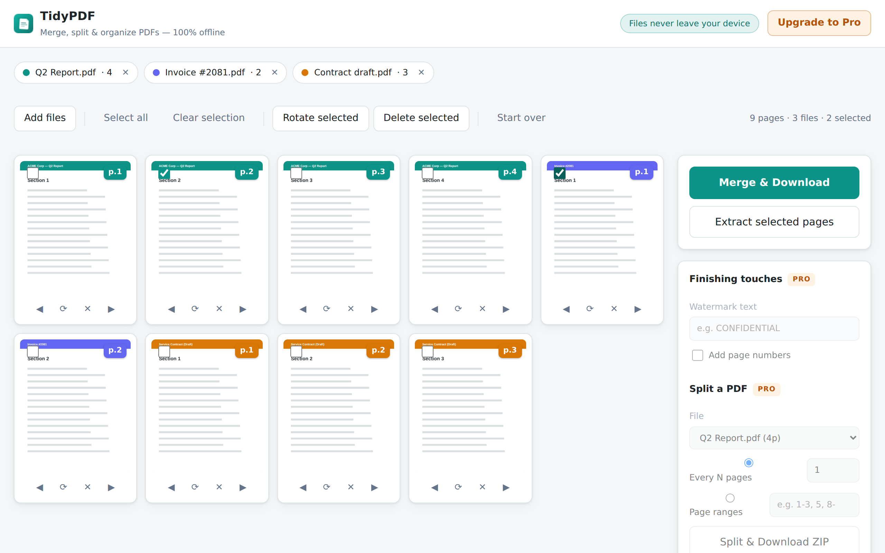

Chrome extension · 100% offline
TidyPDF
Merge, split, rotate and reorder PDF pages — the kind of files you least want on a stranger's server: contracts, invoices, medical records. TidyPDF processes everything inside your browser. Nothing is ever uploaded.

Free, unlimited
Merge anything
Combine any number of PDFs and images into one file. Drag pages across files to get the exact order you want.
Page-level control
Rotate, delete and extract individual pages with live thumbnails.
Images → PDF
JPG, PNG and WebP become PDF pages automatically.
Truly offline
Zero network requests. Works on a plane. Your files stay yours.
Pro — one-time purchase
Watermark
Stamp every page with your own text.
Page numbers
Automatic numbering that respects page rotation.
Split & batch
Split by every N pages or custom ranges like “1-3, 5, 8-”, delivered as a ZIP.